Contents
- compute the actual canopy evaportranspiration
- output
- input
- compute vegetation free and soil moisture deficit free resistance as input of Penman equation
- Decide the direction of ET
- 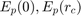
- calculate PET using the Penman Monteith Equation when the direction is evaporation (isEvaporating=1)
- if the actual ET given by the modified Penman Equation is negative,
- 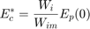
- 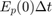
- 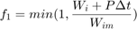
- 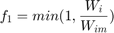
function [ET,actEvapCanopy,actEvapGrnd,actTranspir]=canopy_ET2(feedback,dt,elevation,...
Wim,Wi,SSO,root,Wcr,Wwp,W,ice,...% state variables rainfall,Tair,VPD,LAI,netRad,netShort,RaC,...% forcing rarc,r0c,RGL)% vegetation type specific
compute the actual canopy evaportranspiration
output
ET (mm): the total actual Evaporatranspiration during one time step actEvapCanopy(mm): the total actual evaporation from the canopy during one time step actEvapGrnd(mm): the total actual evaporation from the ground surface water during one time step actTranspir(mm): the total acutal transpiration from the soil during one time step
input
feedback (boolean) : turn on(1)|off(0) the feedback mechanism
dt (s): time step
elevation (m): DEM
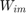 : interception capacity,
Wi (mm): intecepted rainfall at the LAST time step, 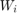
SSO (mm): surface water storage, S_{sto}+\Sigma R_{in}
Wcr (mm): critical point of soil moisture
Wwp (mm): wilting point of soil moisture
W(mm): soil moisture
rainfall (mm): rainfall of the current time step, P
Tair (C): air temperature
VPD (kPa): vapor pressure deficit, VPD is always 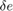
LAI: leaf area index
netRad,: 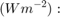 Net irradiance, the external source of energy flux, 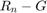
netShort 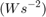 : Net shortwave irradiance used only for canopy resistence of water
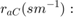 aerodynamic resistance calculated by wind speed and corrected by temperature difference
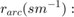 canopy architectural resistance of evaporation
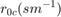 :minimum canopy resistance
RGL (W/m^2): Value of solar radiation below which will be no transpiration (ranges from
%~30 W/m^2 for trees to ~100 W/m^2 for crops)
compute vegetation free and soil moisture deficit free resistance as input of Penman equation
rc = calc_rc(0, netShort, RGL,Tair, vpd,LAI, 1, false);
Decide the direction of ET
global SECONDS_PER_DAY
nCells=size(W,1);
nLayers=size(W,2);
actEvapCanopy=zeros(nCells,1);
actTranspir=zeros(nCells,nLayers);
actEvapGrnd=zeros(nCells,1);
rPotEvapCanopy=Penman(elevation,Tair,netRad,VPD,RaC,0,rarc);
isEvaporating=rPotEvapCanopy>0;
% when dew forms
actEvapCanopy(~isEvaporating)=rPotEvapCanopy(~isEvaporating);
actEvapGrnd(~isEvaporating)=0;
actTranspir(~isEvaporating,:)=0;
Not enough input arguments. Error in canopy_ET2 (line 63) nCells=size(W,1);
calculate PET using the Penman Monteith Equation when the direction is evaporation (isEvaporating=1)
indexZeroIntCap=Wim==0; indexZeroLAI=LAI==0;
if the actual ET given by the modified Penman Equation is negative,
dew forms only on the vegetation
Wi=min(Wi,Wim); evapCanopy=(Wi./Wim).^(2/3).*rPotEvapCanopy*dt; evapCanopy(indexZeroLAI|indexZeroIntCap)=0;
evapGrndMax=rPotEvapCanopy*dt; %VIC's implementation. CREST needs to take the overland storage into %consideration % time fraction of the evaporation. if dt>=SECONDS_PER_DAY
f1 = min(1,(Wi + rainfall)./evapCanopy);
else
f1=min(1,Wi./evapCanopy);
f1(evapCanopy<=0)=1;
end
f1(indexZeroLAI)=0;
canopyEnergyPart=(Wi./Wim).^(2/3);
% canopyEnergyPart=min(canopyEnergyPart,1);
canopyEnergyPart(indexZeroIntCap)=0;
if ~feedback %% routed water goes directly to channels and does not feedback the runoff-genaration module
transFrac = 1-f1.*canopyEnergyPart;
else % CREST update, routed surface water must feedback to the runoff-generatin module
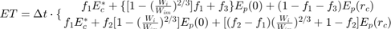
where
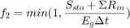
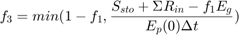
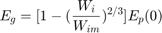
evapGrnd=evapGrndMax.*(1-canopyEnergyPart);
f2=min(1,SSO./evapGrnd);
index1=f2>=f1;
f3=min(1-f1(index1),(SSO(index1)-f1(index1).*evapGrnd(index1))./(evapGrndMax(index1)));
surfFrac=1-canopyEnergyPart;
surfFrac(index1)=surfFrac(index1).*f1(index1)+f3;
surfFrac(~index1)=surfFrac(~index1).*f2(~index1);
transFrac=zeros(nCells,1);
transFrac(index1)=1-f1(index1)-f3;
transFrac(~index1)=(f2(~index1)-f1(~index1)).*canopyEnergyPart(~index1)+1-f2(~index1);
end layeredTrans=transpiration(dt,transFrac(isEvaporating),... W(isEvaporating,:),Wcr(isEvaporating,:),Wwp(isEvaporating,:),ice(isEvaporating,:),... root(isEvaporating,:),r0c(isEvaporating),rarc(isEvaporating),RGL(isEvaporating),... netShort(isEvaporating),netRad(isEvaporating),elevation(isEvaporating),Tair(isEvaporating),... VPD(isEvaporating),LAI(isEvaporating),RaC(isEvaporating)); actEvapCanopy(isEvaporating)=f1(isEvaporating).*evapCanopy(isEvaporating); if feedback actEvapGrnd(isEvaporating)=surfFrac(isEvaporating).*evapGrndMax(isEvaporating); % ET=actEvapCanopy+surfFrac.*evapGrndMax; end % actTranspir(isEvaporating)=transFrac(isEvaporating).*rActEvap(isEvaporating)*dt; % indexOverTranspir=(W-actTranspir)<Wwp;% prevent the transpirated soil moisture below the wilting point % actTranspir(indexOverTranspir)=W(indexOverTranspir)-Wwp(indexOverTranspir); actTranspir(isEvaporating,:)=layeredTrans; ET=actEvapCanopy+actEvapGrnd+sum(actTranspir,2);
end